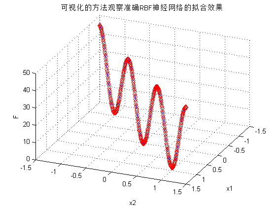

Contents
Matlab神经网络43个案例分析
% RBF网络的回归--非线性函数回归的实现 % by 王小川(@王小川_matlab) % http://www.matlabsky.com % Email:sina363@163.com % http://weibo.com/hgsz2003
清空环境变量
clc clear
产生输入 输出数据
设置步长
interval=0.01; % 产生x1 x2 x1=-1.5:interval:1.5; x2=-1.5:interval:1.5; % 按照函数先求得相应的函数值，作为网络的输出。 F =20+x1.^2-10*cos(2*pi*x1)+x2.^2-10*cos(2*pi*x2);
网络建立和训练
网络建立 输入为[x1;x2],输出为F。Spread使用默认。
net=newrbe([x1;x2],F)
Warning: Rank deficient, rank = 21, tol = 6.683543e-14.
net =
Neural Network
name: 'Radial Basis Network, Exact'
efficiency: .cacheDelayedInputs, .flattenTime,
.memoryReduction
userdata: (your custom info)
dimensions:
numInputs: 1
numLayers: 2
numOutputs: 1
numInputDelays: 0
numLayerDelays: 0
numFeedbackDelays: 0
numWeightElements: 1205
sampleTime: 1
connections:
biasConnect: [1; 1]
inputConnect: [1; 0]
layerConnect: [0 0; 1 0]
outputConnect: [0 1]
subobjects:
inputs: {1x1 cell array of 1 input}
layers: {2x1 cell array of 2 layers}
outputs: {1x2 cell array of 1 output}
biases: {2x1 cell array of 2 biases}
inputWeights: {2x1 cell array of 1 weight}
layerWeights: {2x2 cell array of 1 weight}
functions:
adaptFcn: (none)
adaptParam: (none)
derivFcn: 'defaultderiv'
divideFcn: (none)
divideParam: (none)
divideMode: 'sample'
initFcn: 'initlay'
performFcn: 'mse'
performParam: .regularization, .normalization
plotFcns: {}
plotParams: {1x0 cell array of 0 params}
trainFcn: (none)
trainParam: (none)
weight and bias values:
IW: {2x1 cell} containing 1 input weight matrix
LW: {2x2 cell} containing 1 layer weight matrix
b: {2x1 cell} containing 2 bias vectors
methods:
adapt: Learn while in continuous use
configure: Configure inputs & outputs
gensim: Generate Simulink model
init: Initialize weights & biases
perform: Calculate performance
sim: Evaluate network outputs given inputs
train: Train network with examples
view: View diagram
unconfigure: Unconfigure inputs & outputs
网络的效果验证
% 我们将原数据回带，测试网络效果： ty=sim(net,[x1;x2]); % 我们使用图像来看网络对非线性函数的拟合效果 figure plot3(x1,x2,F,'rd'); hold on; plot3(x1,x2,ty,'b-.'); view(113,36) title('可视化的方法观察准确RBF神经网络的拟合效果') xlabel('x1') ylabel('x2') zlabel('F') grid on